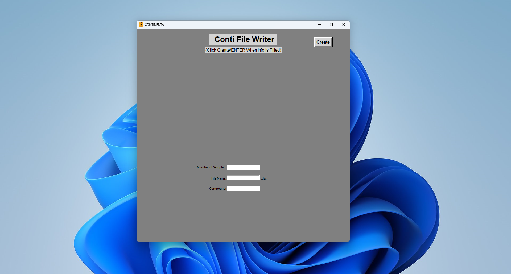
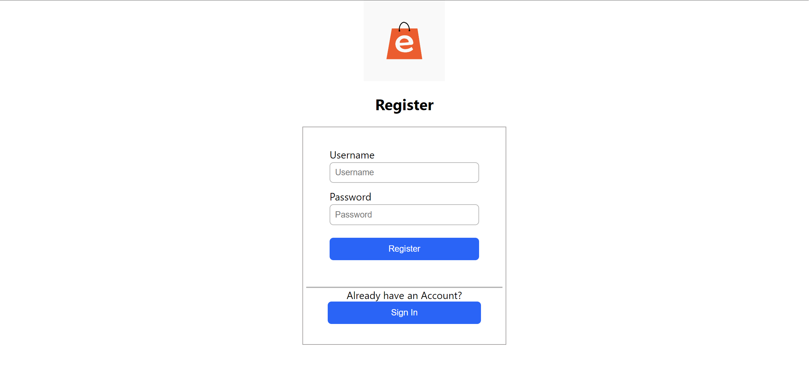
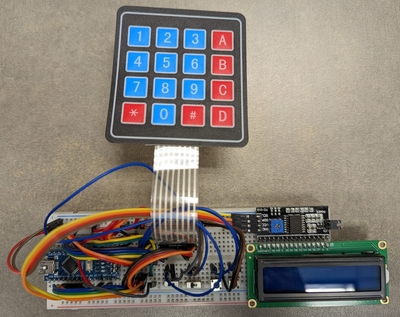

Unity / C# / senior design
Identify, Isolate, and Inform
A virtual reality training experience for Nebraska Medicine, created to give healthcare professionals a memorable way to practice infectious-disease protocols.
Visit Nebraska Medicine ↗Selected work / 01
A collection of coursework, client-facing work, experiments, and tools built around real questions.
Unity / C# / senior design
A virtual reality training experience for Nebraska Medicine, created to give healthcare professionals a memorable way to practice infectious-disease protocols.
Visit Nebraska Medicine ↗
Automation / internship
A small application made during my ContiTech internship to automate the generation of lab weigh-up sheets and reduce manual work.
View repository ↗
React / C# / SQL
A collaborative software engineering project with product browsing, data persistence, and a full purchase flow.
View repository ↗Python / data analysis
A notebook-based exploration of MLB data using pybaseball, focused on finding patterns in team and player performance.
View repository ↗
Arduino / embedded systems
A sensor-based range finder combining a motion detector, alarm, and Arduino Nano into a compact system.
View repository ↗